É o planeta mais próximo ao Sol e o menor do Sistema Solar. É rochoso, praticamente sem atmosfera, e a sua temperatura varia muito, chegando a mais de 400ºC positivos, no lado voltado para o Sol, e cerca de 180ºC negativos, no lado oposto. Mercúrio não tem satélite. É o planeta que possui um movimento de translação de maior velocidade (o ano mercuriano tem apenas 88 dias). O aspecto da superfície é parecido com o da nossa Lua, toda coberta de crateras, originadas da colisão com corpos celestes.
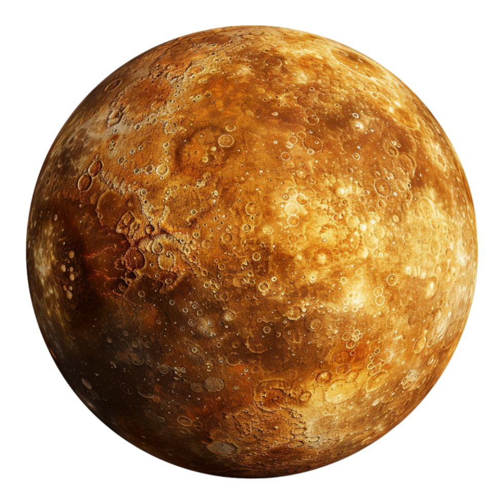
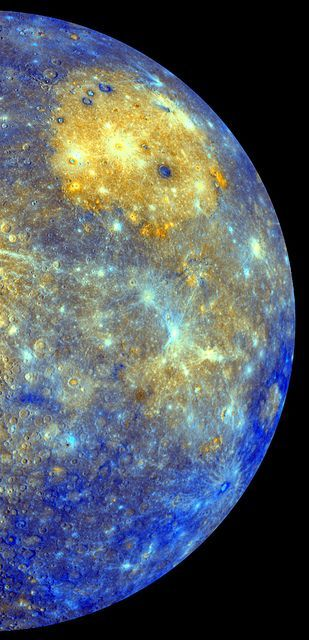
Mercúrio
Mercúrio é o menor e mais rápido planeta do Sistema Solar.
Vênus é conhecido como Estrela-D'Alva ou Estrela da tarde por causa de seu brilho e também porque é visível ao amanhecer e ao anoitecer, conforme a época do ano (mas lembre-se que ela é um planeta e não uma estrela).
É o segundo planeta mais próximo do Sol e o planeta mais próximo da Terra. As perguntas intrigantes que este planeta "gêmeo" da Terra nos coloca começam com o seu movimento de rotação própria. Uma rotação completa sobre si mesmo demora 243.01 dias, o que é um período invulgarmente longo. Além disso, enquanto que a maior parte dos planetas rodam sobre si próprios no mesmo sentido, Vênus é uma das exceções. Tal como Urano e Plutão, a sua rotação é retrógrada, o que significa que em Vênus o Sol nasce a oeste e põe-se a leste.
Vênus é um planeta muito parecido com a Terra, em tamanho, densidade e força da gravidade à superfície, tendo-se chegado a especular sobre se teria condições favoráveis à vida. Além disso, suas estruturas são muito parecidas: um núcleo de ferro, um manto rochoso e uma crosta. Hoje sabemos que, apesar de ter tido origens muito semelhantes à Terra, a sua maior proximidade ao Sol levou a que o planeta desenvolvesse um clima extremamente hostil à vida. De fato, Vênus é o planeta mais quente do sistema solar, sendo mesmo mais quente do que Mercúrio, que está mais próximo do Sol. A sua temperatura média à superfície é de 460ºC devido ao forte efeito de estufa que acontece em grande escala em todo o planeta e não apresenta água.
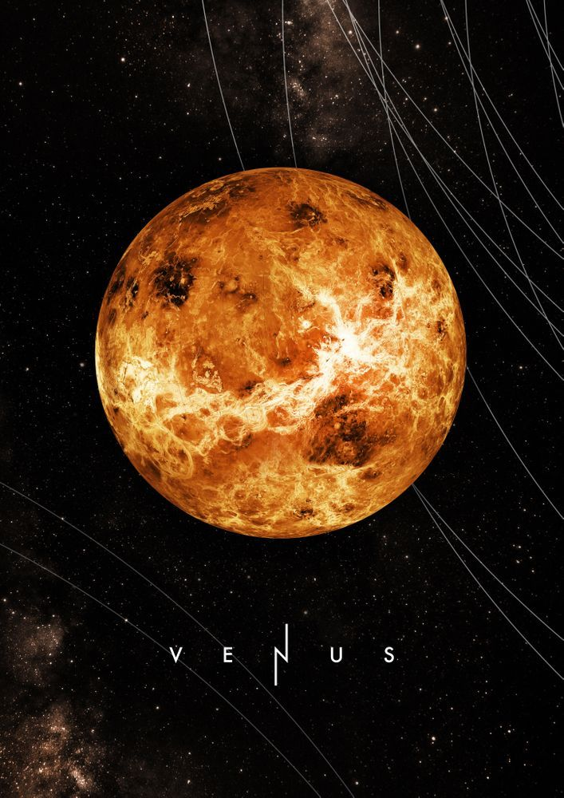
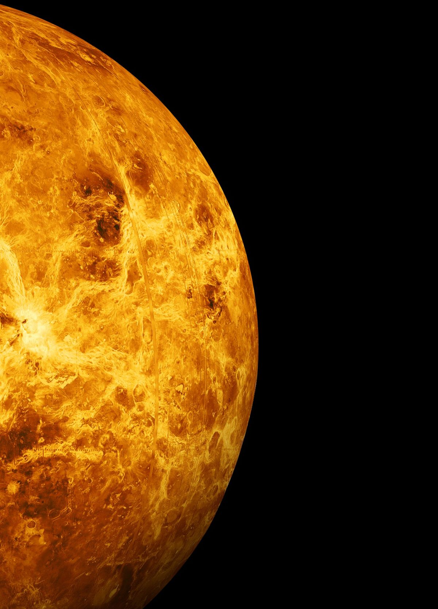
Vênus
Vênus, conhecido como o "planeta do amor" e "estrela d'alva", é o objeto mais brilhante no céu noturno depois da Lua, encantando com sua beleza intensa, mas escondendo uma superfície escaldante e vulcânica.
É o terceiro planeta mais próximo do Sol. É rochoso e a sua atmosfera é composta de diferentes tipos de gases, e a sua temperatura média é de aproximadamente 15ºC.
A Terra, até o que se sabe, é o único planeta do Sistema Solar que apresenta condições que possibilitam a existência de seres vivos como os conhecemos. Tem um satélite, a Lua.
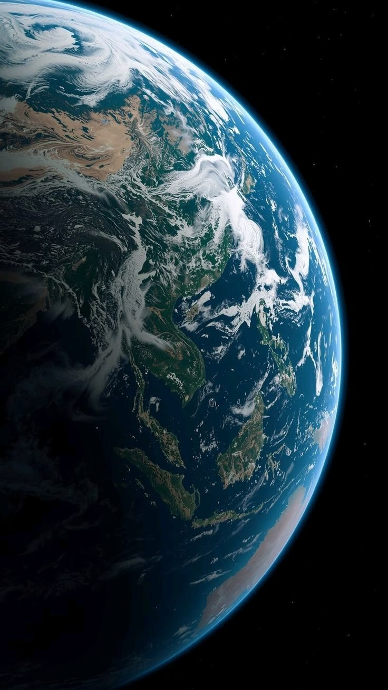
Terra
Nosso lar.
Visto da Terra parece um planeta vermelho, embora na verdade seja mais acastanhado. O seu eixo de rotação tem uma inclinação muito semelhante à do nosso planeta, 25.19º, o que significa que tem estações do ano. Ao contrário de Mercúrio, que está demasiado perto do Sol para que seja facilmente observado, e de Vênus, cuja densa atmosfera e cobertura de nuvens bloqueiam a observação da sua superfície, Marte está relativamente próximo da Terra sem estar muito próximo do Sol, e tem uma atmosfera muito rarefeita e na maior parte formada por gás carbônico, o que nos permite observar a sua superfície com relativa facilidade. Seu período de rotação é aproximadamente 24h, muito parecido com o da Terra, porém sua translação dura cerca de 687 dias.
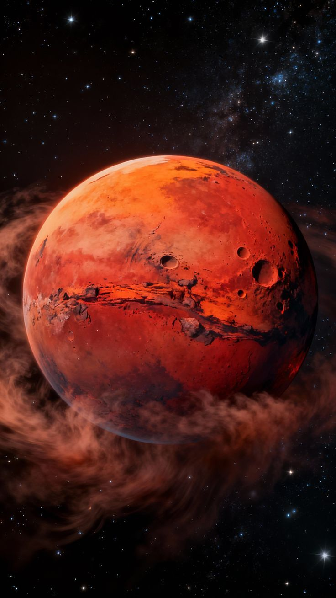
Marte
O fascinante "Planeta Vermelho", é um mundo de mistérios e deserto sideral que inspira a exploração humana, descrito como um guardião da imaginação e um futuro lar potencial no cosmos.
A massa de Júpiter é duas vezes e meia a massa combinada de todos os outros corpos do sistema solar à exceção do Sol.
Júpiter é o maior planeta do sistema solar, e o primeiro dos gigantes gasosos. Tem um diâmetro 11 vezes maior que o diâmetro da Terra e uma massa 318 vezes superior. Demora quase 12 anos a completar uma órbita, mas tem um período de rotação invulgarmente rápido: 9h 50m 28ssendo o planeta com a rotação mais rápida do sistema solar. Embora tenha um núcleo de ferro, quase todo o planeta é uma imensa bola de hidrogênio e um pouco de hélio. A temperatura da superfície é de cerca de -150ºC.
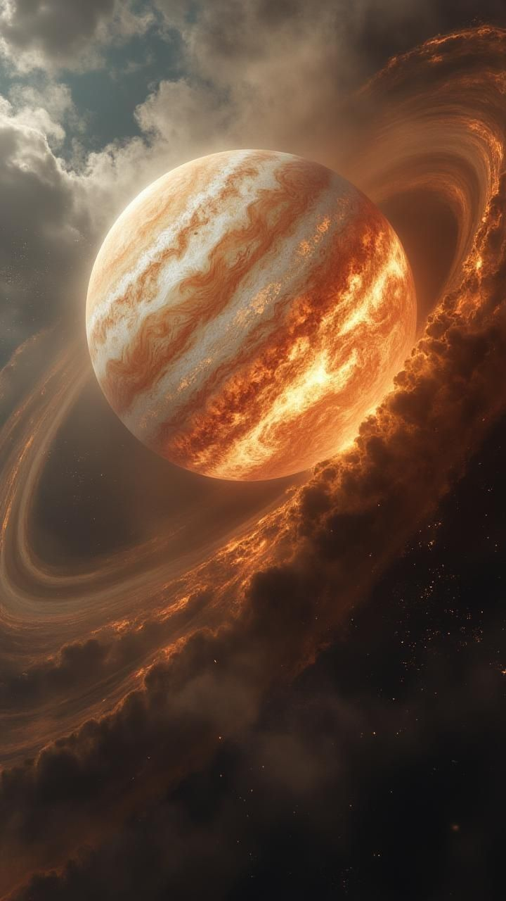
Júpiter
Júpiter, o gigante gasoso do Sistema Solar, é um símbolo de expansão, proteção cósmica e beleza extrema. Com sua Grande Mancha Vermelha e mais de 90 luas, ele atua como um escudo, capturando asteroides e permitindo que a vida prospere na Terra, representando o equilíbrio entre força destrutiva e proteção.
É o segundo maior planeta do nosso sistema solar. É famoso por seus anéis, que podem ser vistos com o auxílio de pequenos telescópios. Os anéis são feitos com pedaços de gelo e rochas. A temperatura média da superfície do planeta é de -140ºC. Saturno é formado basicamente por hidrogênio e pequena quantidade de hélio.
O movimento de rotação em volta do seu eixo demora cerca de 10,5 horas, e cada revolução ao redor do Sol leva 30 anos terrestres.
Tem um número elevado de satélites, 60 descobertos até então, dos quais 35 possuem nomes, e está cercado por um complexo de anéis concêntricos, composto por dezenas de anéis individuais separados por intervalos, estando o mais exterior destes situado a 138 000 km do centro do planeta geralmente compostos por restos de meteoros e cristais de gelo. Alguns deles têm o tamanho de uma casa.
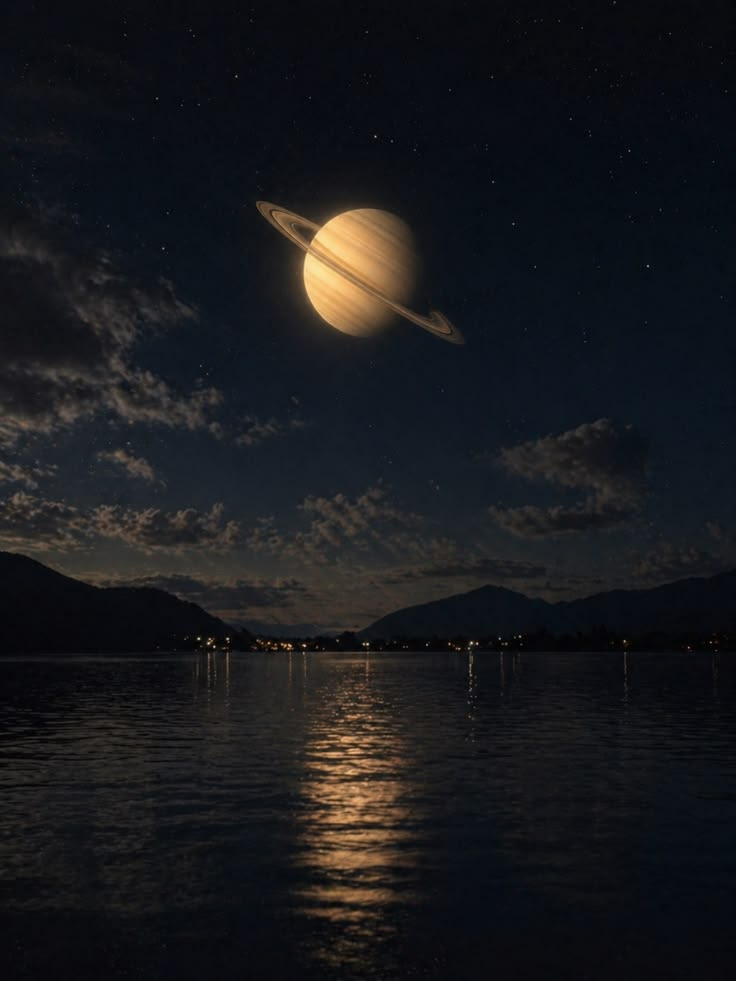
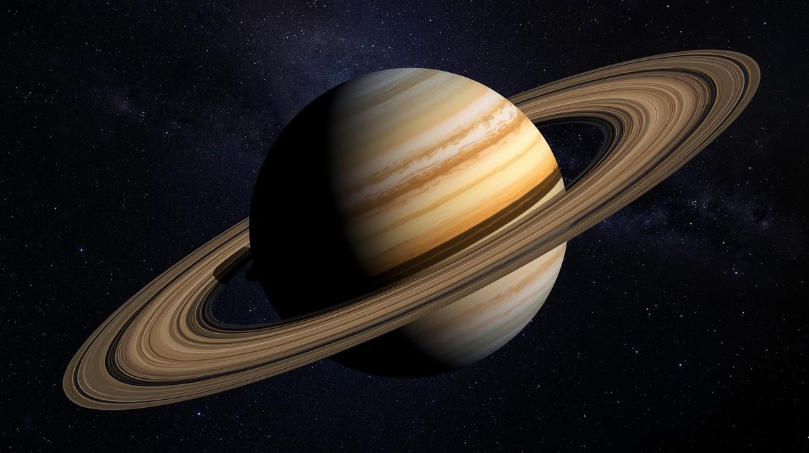
Saturno
Diz-se que a beleza de Saturno está na sua complexidade: um gigante de gás envolvido por uma harmonia de minúsculos anéis.
Urano é o sétimo planeta do sistema solar, situado entre Saturno e Netuno. A característica mais notável de Urano é a estranha inclinação do seu eixo de rotação, quase noventa graus em relação com o plano de sua órbita; essa inclinação não é somente do planeta, mas também de seus anéis, satélites e campo magnético. Urano tem a superfície a mais uniforme de todos os planetas por sua característica cor azul-esverdeada, produzida pela combinação de gases em sua atmosfera, e tem anéis que não podem ser vistos a olho nu; além disso, tem um anel azul, que é uma peculiaridade planetária. Urano é um de poucos planetas que têm um movimento de rotação retrógrado, similar ao de Vênus.
Tem 27 satélites ao seu redor e um fino anel de poeira.
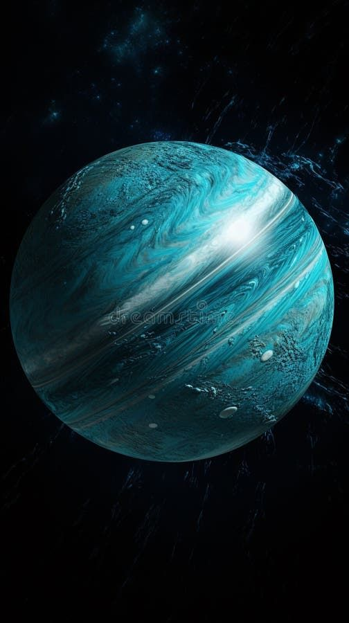
Urano
Urano é o gigante gelado que desafia a gravidade e o senso comum, girando deitado em um sistema solar de gigantes em pé.
Orbitando tão longe do Sol, Netuno recebe muito pouco calor. A sua temperatura superficial média é de -218 °C. No entanto, o planeta parece ter uma fonte interna de calor. Pensa-se que isto se deve ao calor restante, gerado pela matéria em queda durante o nascimento do planeta, que agora irradia pelo espaço fora.
A atmosfera de Netuno tem as mais altas velocidades de ventos no sistema solar, que são acima de 2000 km/h; acredita-se que os ventos são amplificados por este fluxo interno de calor. A estrutura interna lembra a de Urano - um núcleo rochoso coberto por uma crosta de gelo, escondida no profundo de sua grossa atmosfera. Os dois terços internos de Netuno são compostos de uma mistura de rocha fundida, água, amônia líquida e metano. A terça parte exterior é uma mistura de gases aquecidos composta por hidrogênio, hélio, água e metano.
Embora não sejam visíveis nas fotografias do telescópio espacial Hubble, Netuno faz parte dos planetas gigantes que possuem um complexo sistema de anéis. Possui cinco anéis principais e sua descoberta se deve a uma observação efetuada ainda em 1984 a bordo de um avião U2 que acompanhou o deslocamento do planeta por algumas horas durante a ocultação de uma estrela. Neptuno tem 13 luas conhecidas. A maior delas é Tritão, descoberta por William Lassell apenas 17 dias depois da descoberta de Netuno.
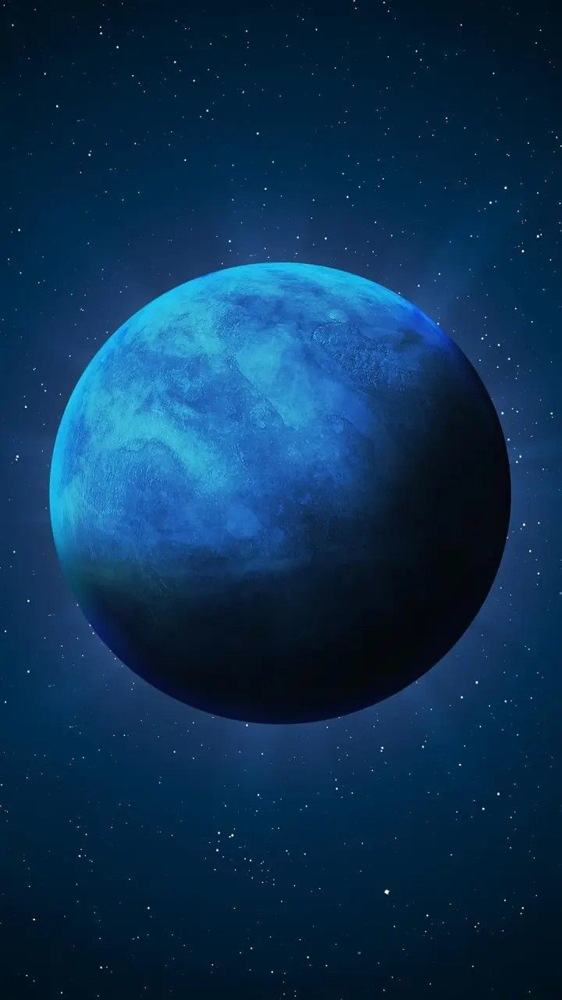
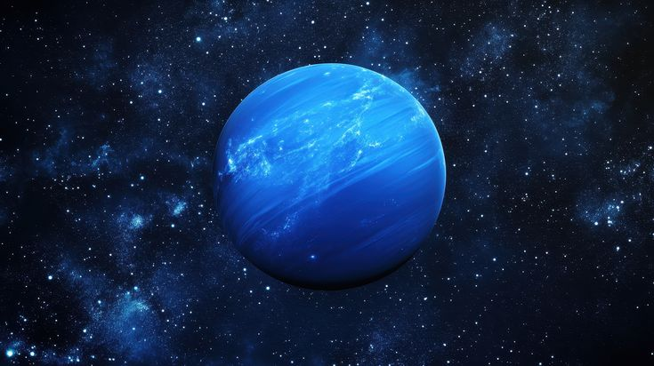
Netuno
Netuno: o gigante de gelo que guarda o mistério das águas azuis no fim do sistema solar.
Plutão que recebera o nome do deus dos infernos, da mitologia greco-latina, foi classificado como o nono planeta do Sistema Solar. Descoberto em 1930, pelo astrônomo norte-americano Clyde Tombaugh, esse astro foi sempre motivo de acirrados debates. Afinal, as características do planetoide, entre outras a excentricidade de sua órbita inclinada, em que certos períodos cruza a órbita de Netuno, já indicavam que dificilmente ela poderia permanecer na elite dos planetas do nosso Sistema. Realmente, 76 anos depois, a UAI resolveu reclassificar o astro do grupo de planetas-anões.
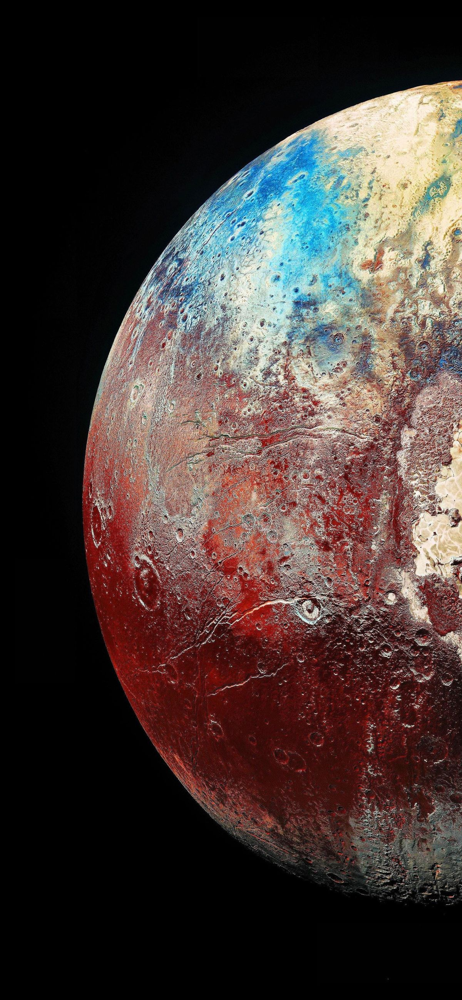
Plutão
Plutão está quase 40 vezes mais distante do Sol do que a Terra, um mundo gelado no escuros.